Nacimos de un encuentro, favorecido por la madre de un joven con discapacidad intelectual, entre un educador, Pablo Snieg, y Sergio, un muchacho que manifestaba dificultades para asumirse como adulto.
La propuesta de Pablo, nuestro actual Director General, se basó en respetar los intereses de Sergio para acercar propuestas más adultas a través de la lectura. Entre meriendas y libros, surgió una pregunta central:
Esta inquietud dio paso a la conformación de un grupo de amigos que comenzó a juntarse cada jueves, circulando de casa en casa para compartir vivencias.
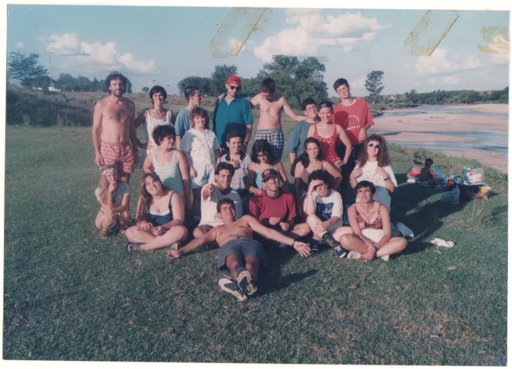
Surgió la idea de llevar la propuesta al fin de semana. Así nació "Cuento y Movimiento", organizando actividades recreativas en la ciudad. Los padres notaron cambios profundos: era la primera vez que sus hijos elegían su ropa o hacían planes con amigos.
Ante la finalización de la etapa escolar y la falta de alternativas, este movimiento evolucionó y dio origen formal a la Fundación Caminos, con su primera sede en la calle Thames.
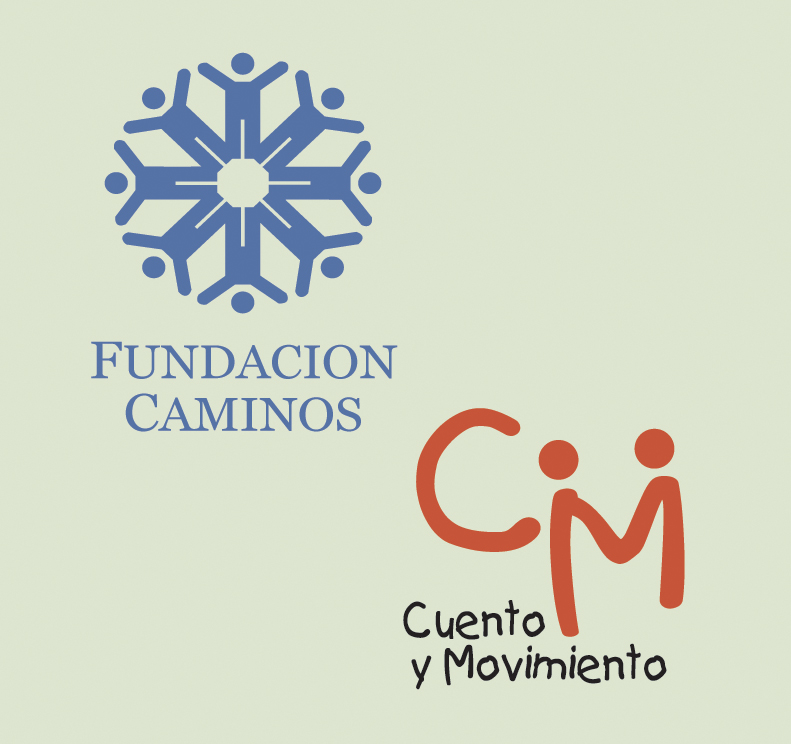
El objetivo siempre fue la inserción comunitaria. Proyectos como "Reciclaje" (1996) mostraron que los jóvenes podían dejar el lugar del "necesitado" para ser ciudadanos activos.
Con esfuerzo, nos mudamos a la calle Gregoria Pérez. Esta nueva sede nos permitió enmarcarnos en el Registro Nacional de Prestadores como Centro de Día Ocupacional, permitiendo que las obras sociales financien la participación de los jóvenes (Ley 24.901).
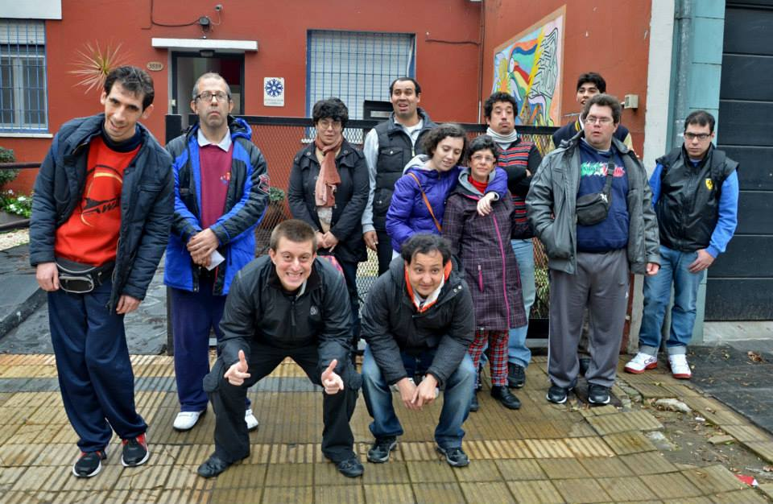
El proyecto fue seleccionado por CONADIS (hoy ANDIS) para obtener un subsidio mediante la ley de cheques. Esto nos permitió tener nuestra sede social propia.
El edificio fue diseñado específicamente para alojar un Centro de Día, ajustándose perfectamente a las necesidades de nuestros talleres y representando un salto de calidad en la prestación.
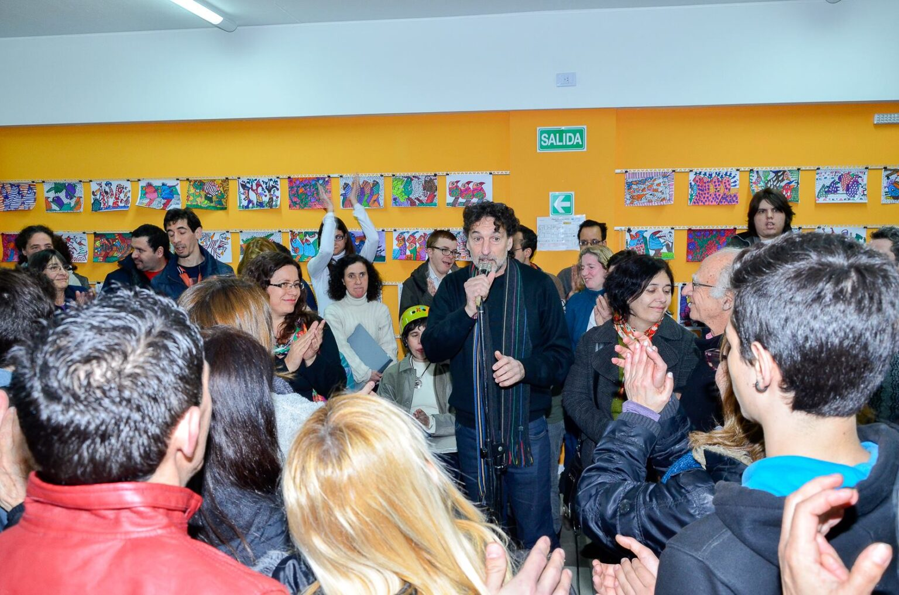
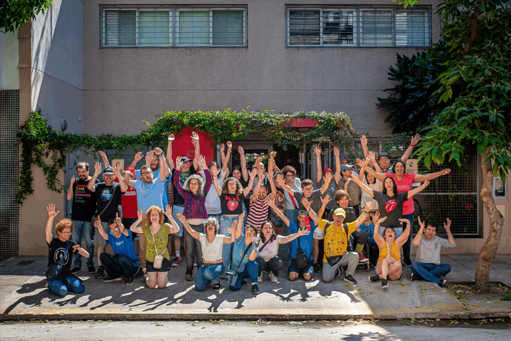
En la actualidad, la dedicación que comenzó en 1989 sigue intacta. Buscamos ofrecer un servicio de calidad que implique a los concurrentes a asumir su propia adultez y deseo.
Trabajamos para fomentar herramientas pragmáticas y simbólicas que hagan posible una Vida Independiente, entendida siempre como interdependencia: el individuo en intercambio permanente con su entorno.
A lo largo de nuestra trayectoria, diversas empresas han sido pilares fundamentales para nuestro crecimiento. Gracias a su compromiso, hemos logrado construir nuestra sede actual y equiparla con la mejor tecnología.
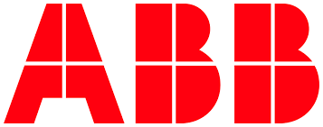


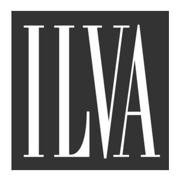
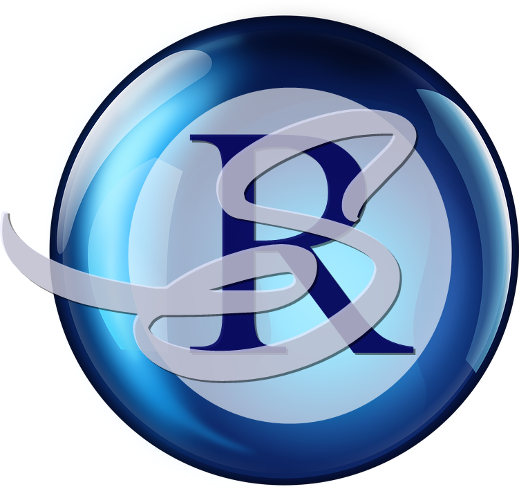
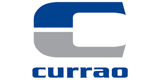
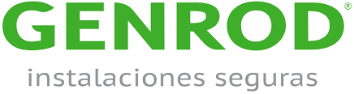
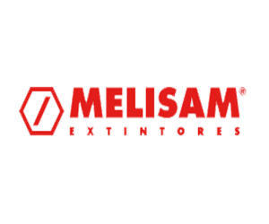
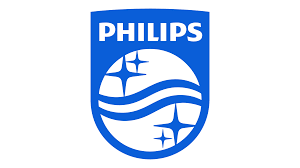
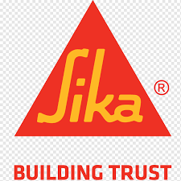
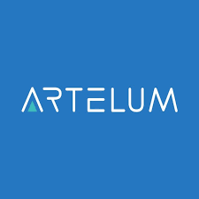
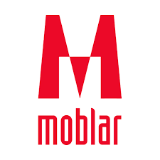

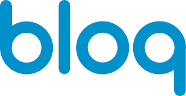
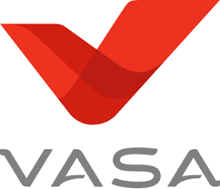
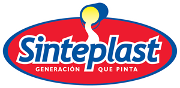

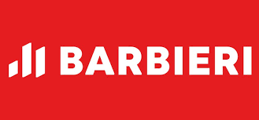
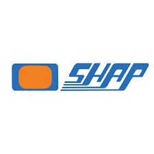
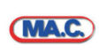

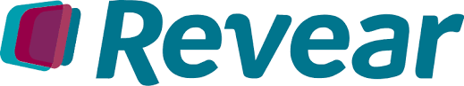
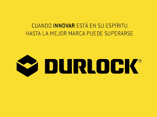
.png)

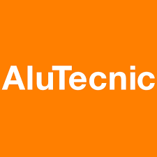
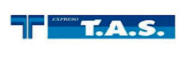
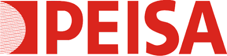

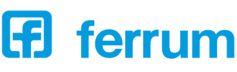
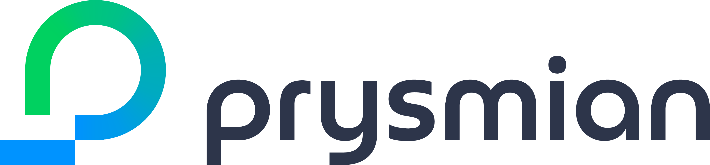
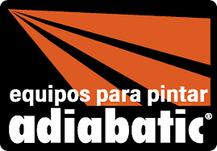

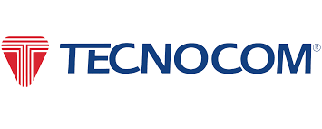


Si formás parte de una organización interesada en impulsar proyectos inclusivos y transformar realidades, te invitamos a ser parte de nuestra red.
Escribinos